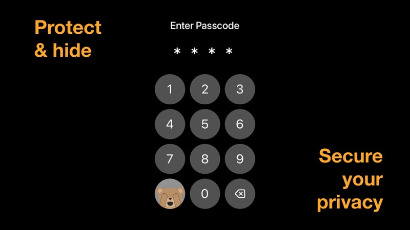

How to keep your videos private on Apple TV
The living-room TV is shared by the whole family. Here is how to keep personal videos and photos to yourself.
Updated November 2026
What Apple TV's Restrictions do
In Settings, under Restrictions (the exact menu name differs by tvOS version), you can set a passcode that limits purchases, apps and content by age rating. That is useful for children, but it is about store content. It doesn't lock your own personal files.
A passcode for your own files: Private Player
- Install Private Player on your Apple TV and set your secret passcode.
- Import your videos, music, photos or text files.
- Anyone opening the app needs the passcode to see what is inside.

Tips
- Choose a passcode family members can't guess, not a birthday.
- Keep the original files backed up on your computer too.
- Use Apple TV's Restrictions as well if young children use the TV.